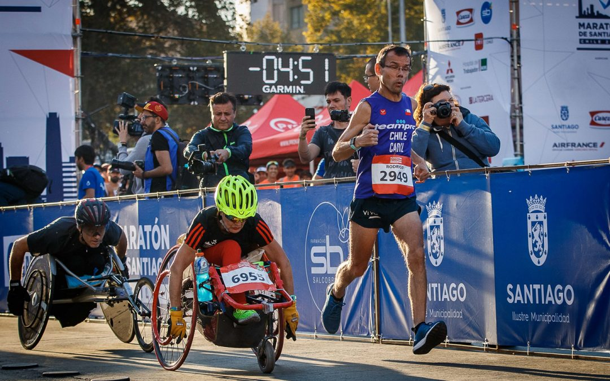
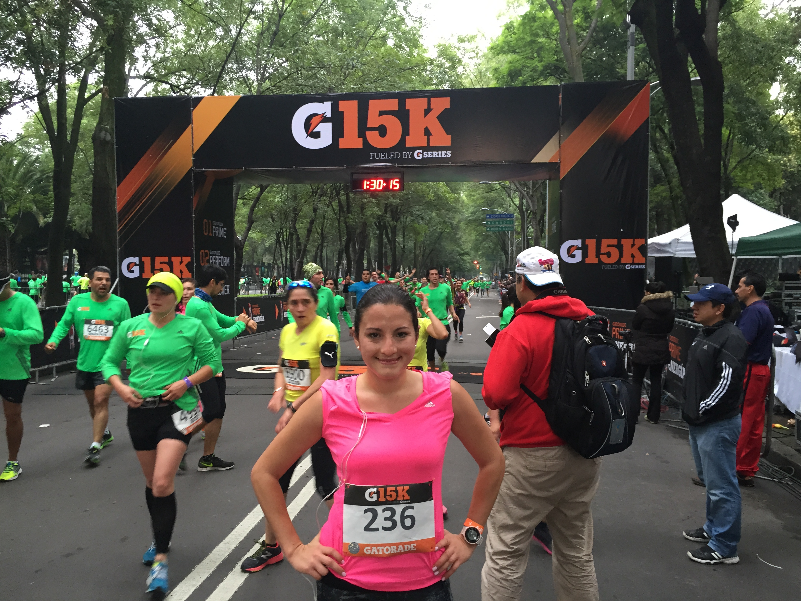

MÁS ALLÁ DE LAS BARRERAS
ATLETAS DE CLASE MUNDIAL EN BUSCA DE LOGRAR SUS SUEÑOS Y ALIMENTADOS PARA DESBLOQUEAR LO MEJOR.

CARRERAS GATORADE
CADA ATLETA ES ÚNICO EN SU BÚSQUEDA.PERO LA COMUNIDAD NOS HACE ESTAR UNIDOS POR DEPORTE.